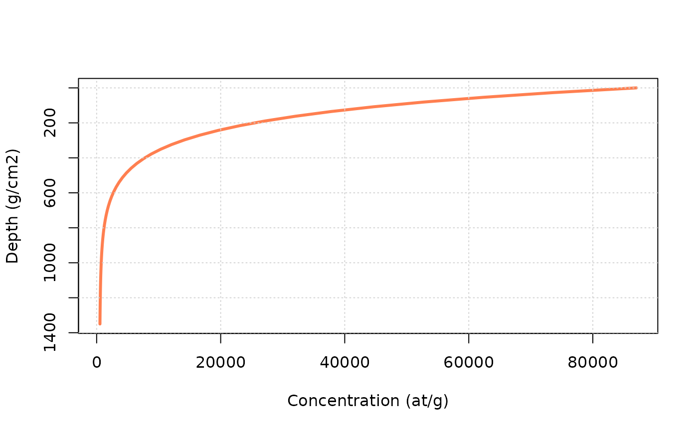

Concentration calculations
Vincent Godard
2021-11-23
concentration_solver.RmdIntroduction
How to use this document?
This html page is derived from an R Markdown Notebook. You can copy/paste the various lines of code into your own R script and run it in any R session.
Objectives
The objective of this notbook is to illustrate simple computations of concentration.
The first thing we have to do is to load the TCNtools library (once it has been installed)
library("TCNtools")Simple calcutions with the Eulerian approach
We are going to consider simple computations of concentration under various conditions in terms of erosion, depth or age. This will be done using an Eulerian point of view, which is the most straightforward and fastest way to perform such computation. In this case the quantity of interest (concentration) is computed at fixed depths below the surface, while the exhumed material is moving through this reference frame during its trajectory toward the surface. More details on the differences between Eulerian and Lagrangian approaches, and their application to complex exposition/denudation histories, will be studied later.
Background
The relevant equation is the following,
\[ C=C_0e^{-\lambda t} + \sum_i \frac{P_i}{\frac{\rho \varepsilon}{\Lambda_i}+\lambda}e^{\frac{-\rho z}{\Lambda_i}}(1-e^{-(\frac{\rho \varepsilon}{\Lambda_i}+\lambda)t}) \] with the following variables and parameters,
- \(C\) the concentration (as a function of time \(t\) and depth \(z\))
- \(C_0\) the inherited concentration
- \(\lambda\) the decay constant for the considered nuclide
- \(P_i\) the scaled surface production rate for the nuclide of interest and the \(i\)-th production pathway (spallation, stopped muons, fast muons)
- \(\rho\) the density of the medium
- \(\Lambda_i\) the attenuation length for the particules of the \(i\)-th production pathway
- \(\varepsilon\) surface denudation
In order to stick with usual conventions in the following time will be measured in years (a), the unit of length will be cm and the depths will be expressed in g/cm\(^2\) (i.e. actual depth \(\times \rho\)).
Set up of the calculations
We should the define the basic parameters we are going to use for the computation, which are two vectors :
- a vector with the attenuation lengths for different particules (in g/cm\(^2\))
- neutrons for spallation reactions \(\Lambda_{spal}\)
- stopping muons \(\Lambda_{stop}\)
- fast muons \(\Lambda_{fast}\)
- a vector (or matrix) with the SLHL production rates (in at/g/a), in this case for the st scaling scheme (Stone (2000)), and decay constant \(\lambda\) (in 1/a) for the nuclide(s) of interest.
For easy reference a set of data for these parameters is included in the TCNtools package, including Sea-Level High-Latitude production rates for the st scaling scheme.
We can first load the attenuation length data (g/cm\(^2\)). Documentation of this dataset is accessible with ?Lambda.
data(Lambda) # we load a vector containing the attenuation length into the environment
print(Lambda)## Lspal Lstop Lfast
## 160 1500 4320
rho = 2.7 # we also define the density (g/cm3)The the production and decay parameters. Documentation of this dataset is accessible with ?prm.
data(prm) # we load a matrix containing the production/decay parameters into the environment
print(prm)## Be10 Al26 C14
## Pspal 4.01000e+00 2.793000e+01 1.224000e+01
## Pstop 1.20000e-02 8.400000e-01 3.310000e+00
## Pfast 3.90000e-02 8.100000e-02 0.000000e+00
## lambda 5.09667e-07 9.667325e-07 1.209681e-04We also need to define the properties of our site of interest and compute the relevant scaling parameters.
altitude = 1000 # elevation in m
latitude = 45 # latitude in degrees
P = atm_pressure(alt=altitude,model="stone2000") # compute atmospheric pressure at site
S = scaling_st(P,latitude) # compute the scaling parameters according to Stone (2000)Concentration along a profile
We first compute the changes in concentration with depth \(z\) along a profile. We are going to use the solv_conc_eul function. As always the notice of the function, including its various arguments, can be obtained by typing ?solv_conc_eul in the R console. We consider no inheritance (\(C_0\)=0), so the evolution is starting from a profile with homogeneous zero concentration.
z = seq(0,500,by=10) * rho # a vector containing depth from 0 to 500 cm by 10 cm increments, and then converted into g/cm2
C0 = 0 # inherited concentration
age = 10000 # the time in a
ero = 10 * 100/1e6*rho # denudation rate expressed in m/Ma and converted in g/cm2/a
C = solv_conc_eul(z,ero,age,C0,prm[,"Be10"],S,Lambda) # compute concentration
plot(C,z,type="l",ylim=rev(range(z)),lwd=3,col="coral",xlab="Concentration (at/g)",ylab="Depth (g/cm2)")
grid()
Try to modify the age and ero (always keeping it in g/cm\(^2\)/a) parameters above, to see their influence on the profile.
Evolution of concentration with time
Now we are going to consider the evolution of concentration with time \(t\). The computation will be carried out at the surface (\(z=0\)), but this could be done at any arbitrary depth.
age = seq(0,100e3,by=100) # a vector containing time from 0 to 100 ka by 100 a steps
z = 0 * rho # depth at which we are going to perform the calculation (cm converted to g/cm2)
C0 = 0 # inherited concentration
ero = 10 * 100/1e6*rho # denudation rate expressed in m/Ma and converted in g/cm2/a
C = solv_conc_eul(z,ero,age,C0,prm[,"Be10"],S,Lambda) # compute concentration
plot(age/1000,C,type="l",col="cornflowerblue",lwd=3,ylab="Concentration (at/g)",xlab="Time (ka)")
grid()We see here the progressive build-up of concentration though time and the establishment of balance between gains (production) and losses (denudation and decay) leading to the concentration plateau at steady state.
Try to modify the ero (always keeping it in g/cm\(^2\)/a) parameter above, to see its influence on time needed to reach steady state and the final concentration.
Evolution of concentration with denudation rate
Now we are going to consider the evolution of concentration with denudation rate \(\varepsilon\). The computation will be carried out at the surface (\(z=0\)), but this could be done at any arbitrary depth. We will consider that \(t=+\infty\) and that we have reached the plateau concentration.
ero = 10^seq(log10(0.1),log10(1000),length.out = 100) * 100/1e6*rho # a log-spaced vector for denudation rate expressed in m/Ma and converted in g/cm2/a
age = Inf # infinite age
z = 0 * rho # depth at which we are going to perform the calculation (cm converted to g/cm2)
C0 = 0 # inherited concentration
C = solv_conc_eul(z,ero,age,C0,prm[,"Be10"],S,Lambda) # compute concentration
plot(ero/100*1e6/rho,C,col="lawngreen",log="xy",type="l",lwd=3,ylab="Concentration (at/g)",xlab="Denudation rate (m/Ma)")
grid()
This figure (log-scales on both axes) highlights the strong inverse relationship, at steady-state, between denudation rate (\(\varepsilon\)) and concentration (\(C\)), which is the foundation of many geomorphological studies trying to establish landscape evolution rates. Note the change in the relationship at very low denudation rates, which corresponds to the situation where the effects of radioactive decay become predominant.
Comparing the Eulerian and Lagrangian descriptions
This section presents a simple comparison of the Eulerian and Lagrangian approaches for the computation of cosmogenic nuclides concentration evolution in complex denudation and exposure scenarios. A nice presentation of this distinction is provided in Knudsen, Egholm, and Jansen (2019).
Definition of the denudation scenario
We will start from a steady state situation under constant denudation, and then apply a change in the denudation rate for a given period of time.
tmax = 2e6 # duration in a
ero = 1/1.e6*100*rho # denudation rate conversion en m/Ma -> g/cm2/a
fact = 5 # change factorHere the duration of the simulation will be 2 Ma, the initial denudation rate will be 1 m/Ma, which will changed by a factor 5 at the beginning of the simulation.
Computation of concentrations
Eulerian reference frame
We compute the evolution of concentrations at the surface (\(z=0\)) using an Eulerian point of view. The calculation is very straightforward thanks to the solv_conc_eul function.
df_e = data.frame(t=seq(0,tmax,length.out = 10000)) # data frame to store results
df_e$C10=solv_conc_eul(0,ero*fact,df_e$t,0,prm[,"Be10"],S,Lambda,in_ero=ero)
df_e$C26=solv_conc_eul(0,ero*fact,df_e$t,0,prm[,"Al26"],S,Lambda,in_ero=ero)Lagrangian reference frame
Now we do the same calculation using a Lagrangian point of view, i.e. with a reference frame attached to a rock particle during its journey toward the surface as a response to denudation. It is slightly more complicated than in the Eulerian case and is done using the solv_conc_lag function.
We first initiate a dataframe (df_l) and compute the evolution in depth z of the particle through time when it is exhumed from its initial depth (here 10 m) to the surface at a rate 5 m/Ma.
df_l = data.frame(t=seq(0,tmax,length.out = 10000)) # data frame to store results
df_l$z = ero*fact*df_l$t # cumulative erosion trough time (g/cm2)
df_l$z = max(df_l$z) - df_l$z # convert into depthWe compute the steady state concentration at starting depth, using the Eulerian solver.
C10_0 = solv_conc_eul(max(df_l$z),ero,Inf,0,prm[,'Be10'],S,Lambda) # starting 10Be concentration
C26_0 = solv_conc_eul(max(df_l$z),ero,Inf,0,prm[,'Al26'],S,Lambda) # starting 26Al concentrationWe then define another column in the data frame with the evolution of scaling parameters through time. It is trivial here in the case of the time-independent st scaling, but it will be highly valuable when dealing with time-dependent scalings, where the Eulerian approach is not applicable.
df_l$Ssp = rep(as.numeric(S[1]),nrow(df_l)) # scaling spallation
df_l$Smu = rep(as.numeric(S[2]),nrow(df_l)) # scaling muonsThen we calculate the un-scaled production rates at depths the depths of interest. Here again, as we use simple models of exponential decrease for production with depth, the interest of using such Lagrangian approach is not obvious. But such way of computing concentration will allow to deal with non-exponential production profiles, which might necessary in some situation for muons or low-energy neutrons.
# 10Be (not scaled)
df_l$Psp10 = prm["Pspal",'Be10']*exp(-1*df_l$z/Lambda["Lspal"]) # spallation
df_l$Pmu10 = prm["Pstop",'Be10']*exp(-1*df_l$z/Lambda["Lstop"]) + prm["Pfast",'Be10']*exp(-1*df_l$z/Lambda["Lfast"]) # muons
# 26Al (not scaled)
df_l$Psp26 = prm["Pspal",'Al26']*exp(-1*df_l$z/Lambda["Lspal"]) # spallation
df_l$Pmu26 = prm["Pstop",'Al26']*exp(-1*df_l$z/Lambda["Lstop"]) + prm["Pfast",'Al26']*exp(-1*df_l$z/Lambda["Lfast"]) # muonsWe can now use the solv_conc_lag function to compute the evolution of concentration through time and depth.
df_l$C10 = solv_conc_lag(df_l$t,df_l$z,C10_0,df_l$Psp10,df_l$Pmu10,prm["lambda",'Be10'],cbind(df_l$Ssp,df_l$Smu),final=FALSE)
df_l$C26 = solv_conc_lag(df_l$t,df_l$z,C26_0,df_l$Psp26,df_l$Pmu26,prm["lambda",'Al26'],cbind(df_l$Ssp,df_l$Smu),final=FALSE)Comparison of results
We can now plot the results of the calculations and compare the two approaches. First for \(^{10}\)Be.
col_e = "chartreuse"
col_l = "chocolate1"
plot(df_e$t/1e6,df_e$C10/1e6,type="l",col=col_e,lwd=2, xlim=range(df_e$t/1e6),ylim=range(df_e$C10/1e6,df_l$C10/1e6),
xlab="Time (Ma)",ylab="10Be concentration (x10e6 at/g)")
grid()
lines(df_l$t/1e6,df_l$C10/1e6,col=col_l,lwd=2)
legend("topright",c("Eulerian","Lagrangian"),lwd=2,col=c(col_e,col_l))The Lagrangian evolution starts with a low concentration corresponding to the burial at depth of the particle at the onset of the evolution, while at the same time (\(t=0\)) we are looking at the surface with the Eulerian point of view, and then obviously observe much higher concentrations. The two descriptions converge toward the same concentration at the end of the evolution (i.e. when the lagrangian particle reaches the surface).
We can also represent the corresponding two nuclides plot for \(^{10}\)Be and \(^{26}\)Al. We need first to compute the steady-state erosion and constant exposure lines.
# steady state erosion lines
erosion = 10^seq(log10(0.0001),log10(2000),length.out = 100)/1.e6*100*rho # m/Ma -> g/cm2/a
C10Be = solv_conc_eul(0,erosion,Inf,0,prm[,'Be10'],S,Lambda)
C26Al = solv_conc_eul(0,erosion,Inf,0,prm[,'Al26'],S,Lambda)
ss_erosion = as.data.frame(cbind(ero,C10Be,C26Al))
# plot banana line ss exposure
time = 10^seq(log10(100),log10(200e6),length.out = 100) # a
C10Be = solv_conc_eul(0,0,time,0,prm[,'Be10'],S,Lambda)
C26Al = solv_conc_eul(0,0,time,0,prm[,'Al26'],S,Lambda)
ss_exposure = as.data.frame(cbind(time,C10Be,C26Al))
#And then plot.
plot(NA, xlim=range(df_e$C10/1e6,df_l$C10/1e6),log="x", ylim=range(df_e$C26/df_e$C10,df_l$C26/df_l$C10),
xlab="10Be concentration (x10e6 at/g)",ylab="26Al/10Be")
grid()
lines(ss_erosion$C10Be/1e6,ss_erosion$C26Al/ss_erosion$C10Be,col="black")
lines(ss_exposure$C10Be/1e6,ss_exposure$C26Al/ss_exposure$C10Be,col="black",lty=2)
lines(df_e$C10/1e6,df_e$C26/df_e$C10,col=col_e)
lines(df_l$C10/1e6,df_l$C26/df_l$C10,col=col_l)
legend("bottomright",c("Eulerian","Lagrangian"),lwd=2,col=c(col_e,col_l))Note that the steady-state erosion and constant exposure lines are only relevant for the Eulerian trajectory.
References
Knudsen, Mads Faurschou, David Lundbek Egholm, and John D. Jansen. 2019. “Time-integrating cosmogenic nuclide inventories under the influence of variable erosion, exposure, and sediment mixing.” Quaternary Geochronology 51 (December 2018): 110–19. https://doi.org/10.1016/j.quageo.2019.02.005.
Stone, John O. 2000. “Air pressure and cosmogenic isotope production.” Journal of Geophysical Research: Solid Earth 105 (B10): 23753–9. https://doi.org/10.1029/2000JB900181.